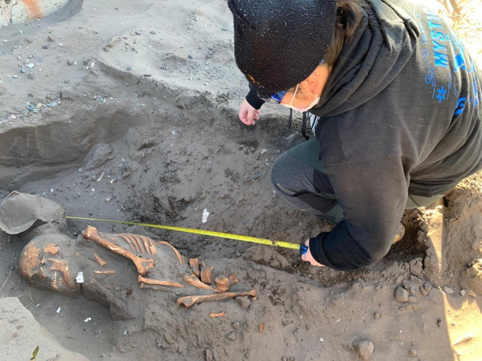
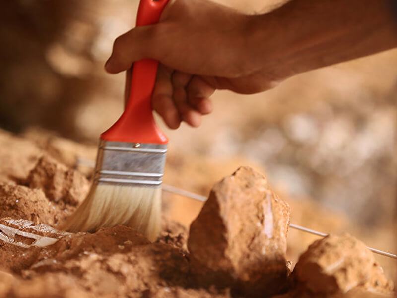

Soluciones integrales para el patrimonio cultural y natural
Ofrecemos servicios especializados para instituciones públicas y privadas que requieren acompañamiento profesional en arqueología, gestión del patrimonio y proyectos de desarrollo sostenible en Colombia.

Prospección arqueológica
Identificación y evaluación de sitios arqueológicos en zonas de intervención civil o de infraestructura.

Excavación y registro
Documentación rigurosa de hallazgos arqueológicos siguiendo estándares nacionales e internacionales.

Tecnología aplicada
Uso de georadar y otras tecnologías no invasivas para la detección de estructuras y hallazgos subterráneos.
Gestión del patrimonio
Formulación y ejecución de planes de manejo arqueológico para proyectos de obra pública y privada.
Investigación histórica
Estudio e interpretación de fuentes históricas para la comprensión del patrimonio cultural regional.
Consultoría integral
Asesoría especializada para el cumplimiento de requisitos legales en materia de patrimonio cultural.
Todos nuestros servicios se desarrollan bajo los lineamientos del Instituto Colombiano de Antropología e Historia (ICANH) y demás entidades competentes, garantizando el cumplimiento de la normativa vigente y el respeto por el patrimonio cultural de las comunidades intervenidas.